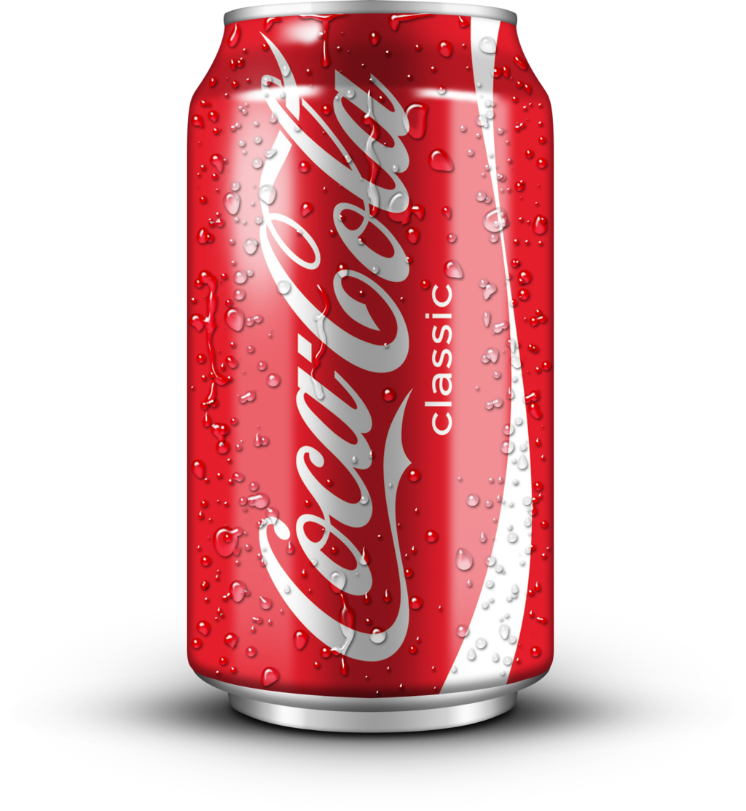
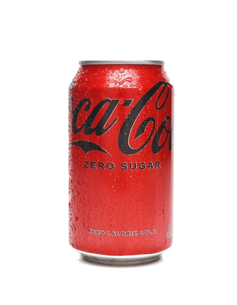

Le Coca-Cola
Nous vendons deux types de Coca-Cola ;
- Coca classique :

C’est la référence absolue des sodas, reconnaissable entre mille par sa robe ambrée et son étiquette rouge iconique. Sa recette, jalousement gardée, offre un équilibre parfait entre des notes de vanille, de cannelle et d’agrumes, le tout soutenu par une caféine légère qui apporte un petit coup de fouet. En bouche, le Coca-Cola Classic se distingue par une effervescence fine mais persistante, créant une sensation de fraîcheur immédiate. C’est la boisson de partage par excellence, idéale pour accompagner un burger ou un repas convivial, offrant une rondeur sucrée qui apaise le palais après des saveurs salées.
- Coca zéro :

Conçu pour ceux qui ne veulent pas choisir entre plaisir et équilibre, le Coca-Cola Zéro réussit l'exploit de copier le profil aromatique de l'original sans contenir un seul gramme de sucre. Grâce à un mélange précis d'édulcorants, il conserve ce goût caramélisé et cette force gazeuse caractéristique, mais avec une finale plus légère et moins sirupeuse en bouche. C'est l'allié parfait pour se rafraîchir tout au long de la journée sans apport calorique. Chez Migros, il est souvent plébiscité par les sportifs ou les personnes attentives à leur consommation de sucre qui recherchent le frisson "Coke" intact.